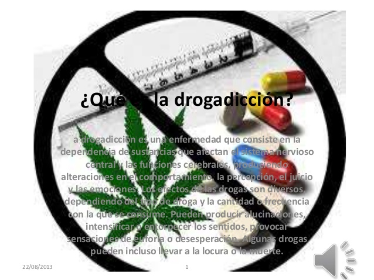

La drogadicción es una enfermedad que consiste en la dependencia de sustancias que afectan el sistema nervioso central y las funciones cerebrales, produciendo alteraciones en el comportamiento, la percepción, el juicio y las emociones. Los efectos de las drogas son diversos, dependiendo del tipo de droga y la cantidad o frecuencia con la que se consume. Pueden producir alucinaciones, intensificar o entorpecer los sentidos, provocar sensaciones de euforia o desesperación. Algunas drogas pueden incluso llevar a la locura o la muerte.
Hay varios tipos de grogas que son los siguientes:
Cuando hablamos de “drogas adictivas”, automáticamente pensamos en cosas como la cocaína, o la heroína. Pero no nos damos cuentas que muchas de las drogas que causan adicción las podemos conseguir fácilmente en cualquier farmacia.
Llamadas también no-médicas o duras, se definen como aquellas sustancias cuyo utilizó médico es nulo o no comprobado, sin embargo se consumen para alterar intencionalmente el funcionamiento del SNC.